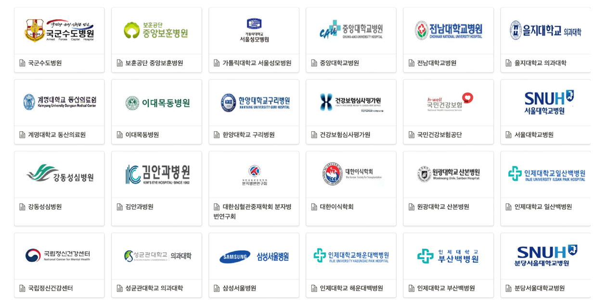
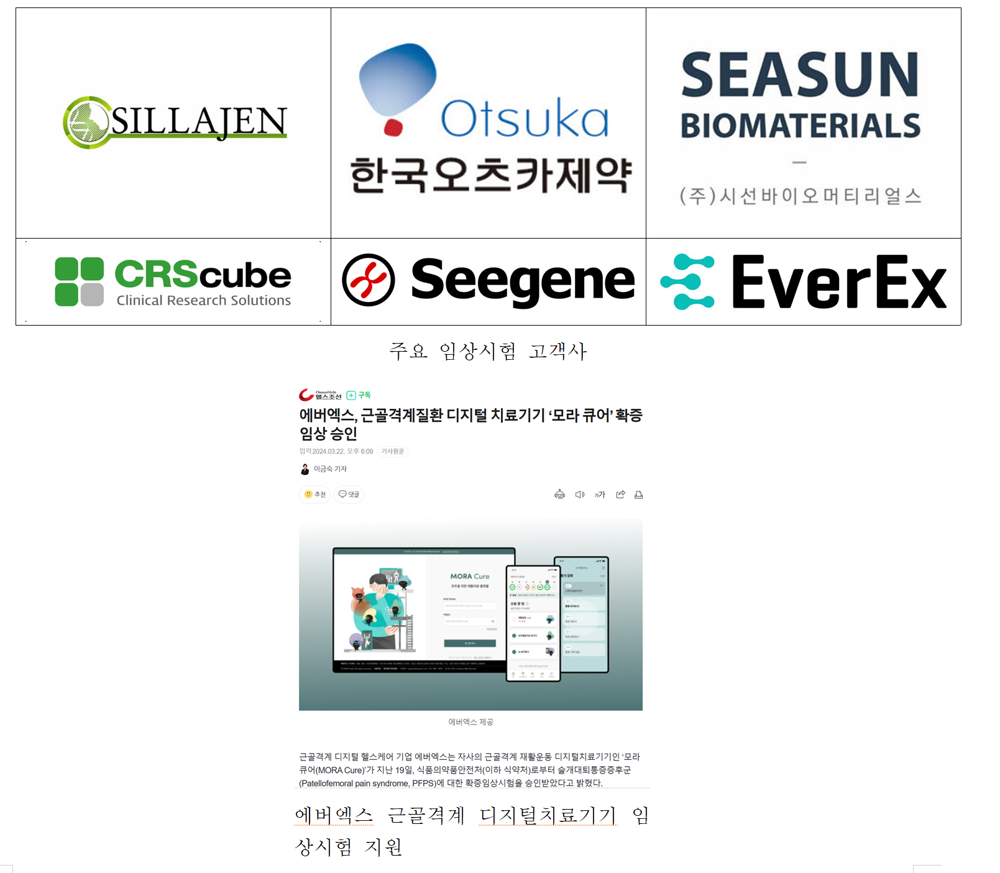
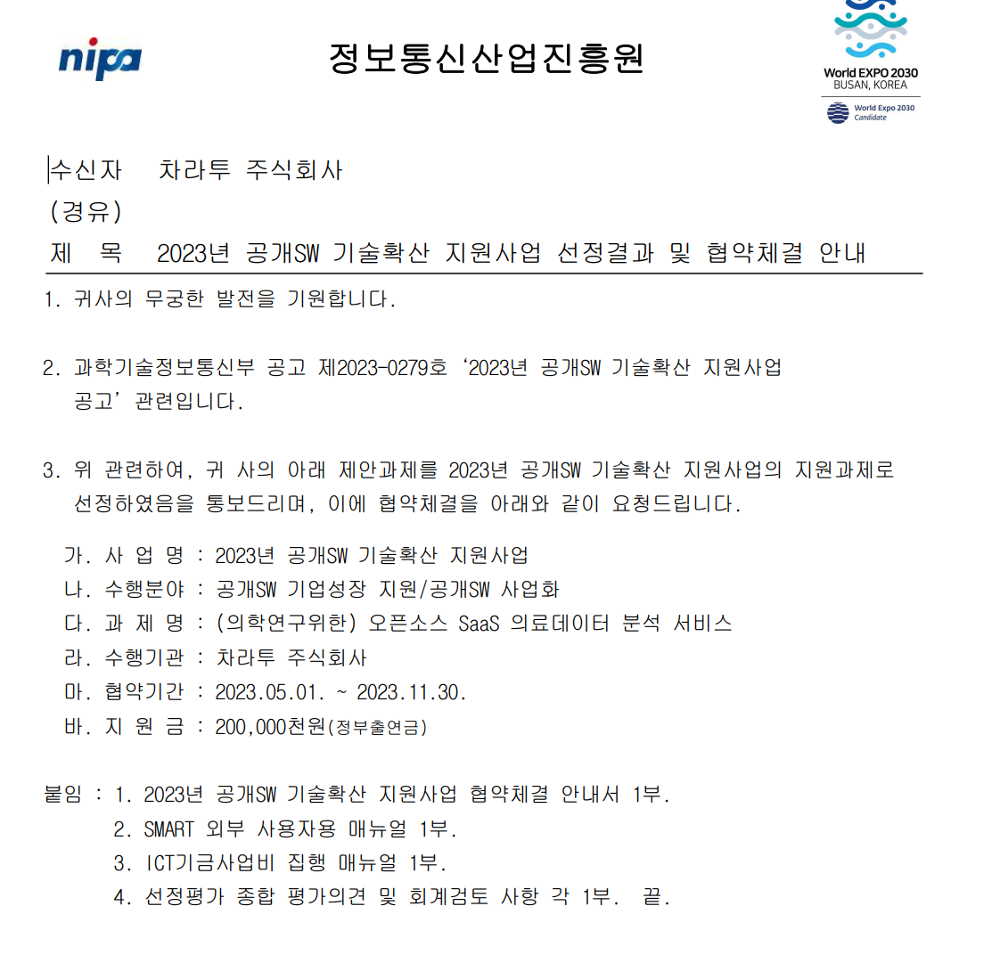
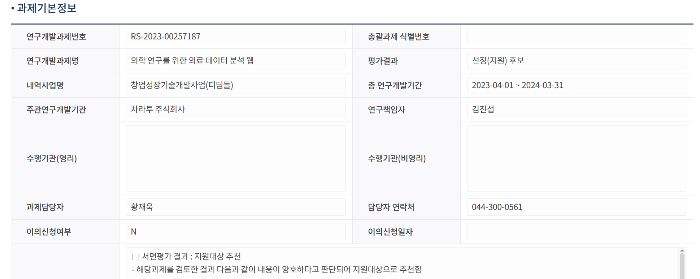
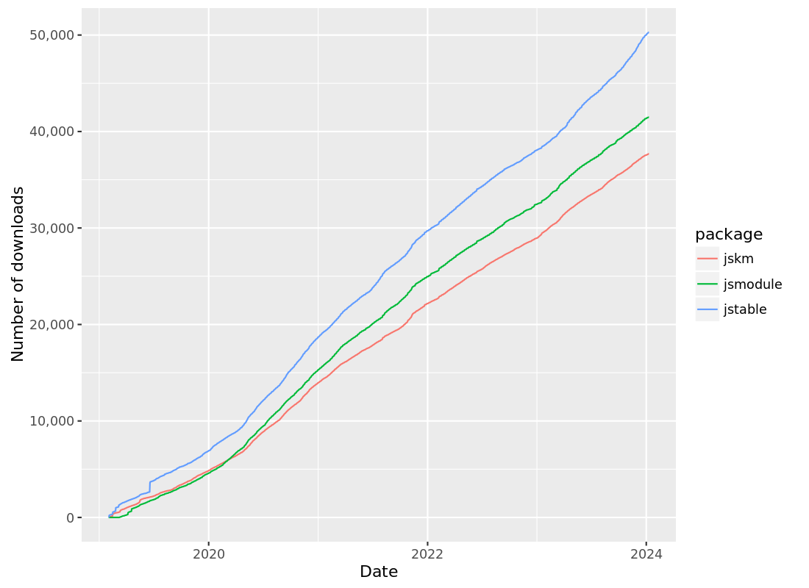
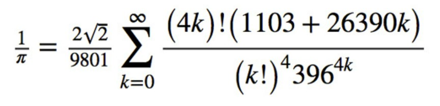
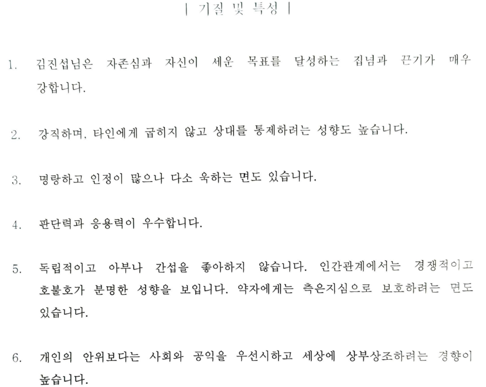
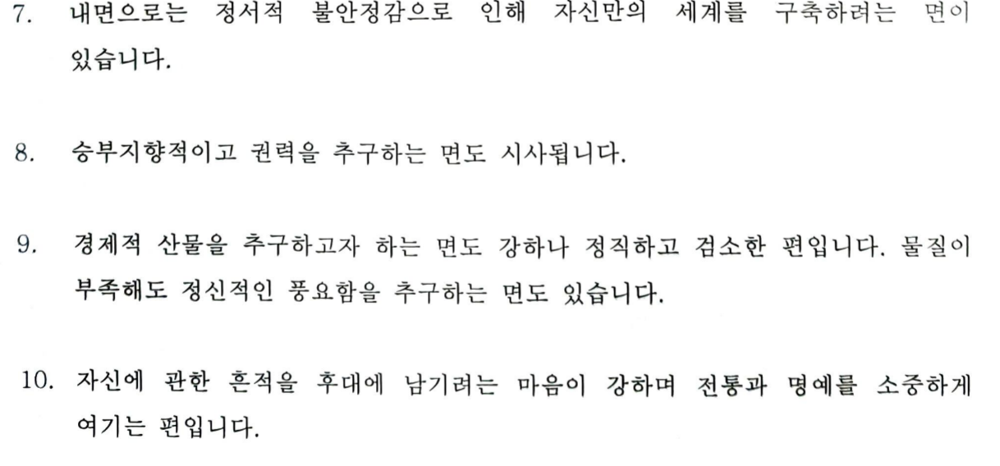
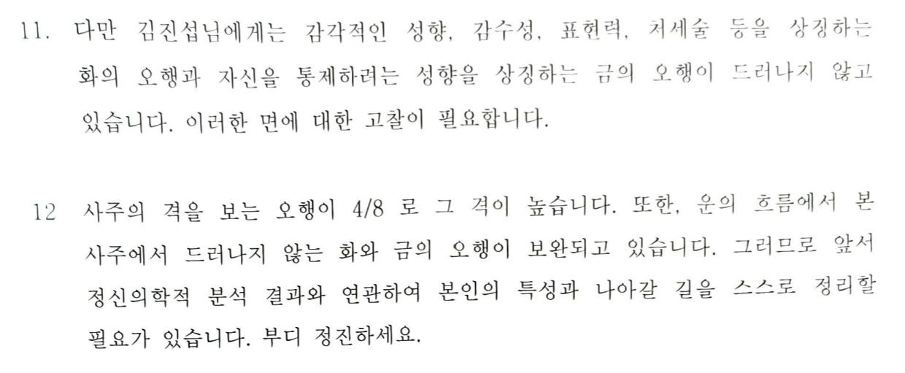

의사의 길: 나만의 특이점을 찾아서
2026 여름 디지털 헬스케어 부트캠프
2026-07-21
Executive summary
수학올림피아드 + 의대 = 의학통계(예방의학)
의학통계 + IT기업(삼성전자 무선사업부) = 창업(의학통계)
연매출 1.5억 + 파트타임 job = 소상공인(투자없이생존)
소상공인 + 정부지원(사업비, 사무실) = 스타트업
의학연구지원 \(\rightarrow\) 임상시험분석시장 진출
- 문제해결 \(\rightarrow\) 문제정의 \(\rightarrow\) 아름다움 \(\rightarrow\) 신내림
수학올림피아드
수학과만 생각했는데 의대 입학
학원강사
본과 2학년말부터 대치 위OO.
30살까지 수원 프OOOO, 대치 위OO.
예방의학
전공의
석사 및 박사 수료
R, python, 리눅스 이용 시작. 지인 상대로 통계 자문 시작.
박사과정과 응급실 당직 병행 중, 지도교수님 통해 우연히 제의받음.
DMC 연구소로 입사 10개월만에 무선사업부로 이동.
- 연구소에서는 디지털헬스 선행 기술 개발팀, 사업부에서는 삼성헬스 앱 개발팀.

사내벤처 C-lab
사내 우수 아이디어 선발, 1년 과제 진행後 스핀오프 결정.
거북목관리 안경테, 1day 통계지원 서비스로 지원했으나 광탈.
퇴사
2년차 중반 퇴사 결심.
의료 쪽 일을 병행하며 의대 입시컨설팅에 도전하기로 함.
의대 입시 컨설팅은 시작도 못함, 박사과정을 마치기로 결정.
박사과정
물리학에 빠짐. 일반상대성이론과 양자역학에 감명받음.
자료
.png)
법인설립
연구는 안되는데 창업 공모전은 선정되기 시작.
창업하기로 결심, 블록체인은 엄두가 나지 않음.
배운게 도둑질, 원래 하던 통계지원을 하기로 결정하고 1인 법인 설립.
처음엔 선배, 동기들과 그들의 지인들이 주 고객.
現 맞춤형/공개 통계웹, 통계컨설팅, 공공빅데이터 분석이 주 업무
주요 계약
강동/강남/동탄성심, 일산/상계백, 길, 고대안암병원과 연단위 계약
루닛/신라젠 등 바이오회사 임상시험 연구설계 및 통계분석 지원

NEJM
심혈관중재시술 전략비교
삼성서울병원 이주명, 최기홍 교수님을 도와 두 심혈관중재시술(PCI) 전략을 비교, 다기관 고려한 stratified cox 와 competing risk analysis 를 수행하고 관련 통계자문을 제공하였습니다. 본 연구는 New England Journal of Medicine(NEJM, IF 176.079) 에 게재되었습니다.
원본 사례 그림은 외부 링크가 만료되어 제외했습니다. 논문 성과와 설명은 텍스트를 기준으로 이어갑니다.
LANCET
Statin 병용요법 비열등성검정
연세의료원 심장내과 홍명기교수 팀을 도와 high-intensity statin 단일요법과 ezetimibe + moderate-intensity statin 병용요법을 비교, (1)비열등성검정 샘플수 계산 및 통계검토와 (2)리비전 통계분석을 지원하였습니다. 본 연구는 The Lancet(IF 202.731) 에 게재되었습니다

JAMA
Statin 치료전략 비교
연세의료원 심장내과 홍명기교수 연구팀을 도와 LODESTAR (Low-Density Lipoprotein Cholesterol-Targeting Statin Therapy Versus Intensity-Based Statin Therapy in Patients With Coronary Artery Disease) Trial 을 분석, statin 치료전략을 비교하고 리비전에 필요한 통계자문을 제공했습니다. 본 연구는 JAMA(IF 157.3) 에 게재되었습니다.
원본 사례 그림은 외부 링크가 만료되어 제외했습니다. 논문 성과와 설명은 텍스트를 기준으로 이어갑니다.
병원고객

- 강동/동탄성심, 상계/일산백, 길, 고대안암병원과 연단위 계약 체결
임상시험시장 진출
- 신라젠과 연단위 계약 체결, EverEX 확증임상시험 승인 지원

22년 IITP 연구개발과제 선정
2년 10.5억 with 앤틀러, 파이디지털헬스케어

R&D: statgarten

22년 창업도약패키지 선정

심평원 공통데이터모델 변환 용역

23년 공개SW기술확산사업
(의학연구위한) 오픈소스 SaaS 의료데이터 분석서비스 - NIPA(7개월, 2억)

창업성장기술개발 디딤돌
의학 연구를 위한 의료 데이터 분석 웹 - 중기부(1년, 1.2억)

가상환경 의료기술 개발사업
“더 나은 환자 경험을 위한 클라우드 기반 디지털 의료서비스 모델 개발 및 실증” - 보건복지부(5년 50억원) - 주관: 연세대학교 산학협력단 - 공동: 분당차병원, 원주 연세대학교, 레몬헬스케어, 월드버텍, 차라투 - 차라투는 “AI 챗봇기반 사전 예진실 서비스” 담당
24년 글로벌협업프로그램 “마중”
“신약 임상시험 특화 분석서비스” - 중기부 및 마이크로소프트 (최대 2억, 평균 1.25억) - Azure 이용 SaaS 전환, 생성형AI 보고서 생성기술, 일본진출

재무 & 팀
- 21년 1.45억 -> 22년 2.74억 -> 23년 5.82억(원)
- 창업 후 투자, 대출 없이 운영중
팀원 7명(평균나이 27세), 인턴 5명(의사 2명, 의대생 2명, 연세대 스타트업인턴십)
프로그램 개발, 블로그 운영
블로그, 카카오톡 오픈채팅방- 프로그래밍 갤러리 R 유저 모임
180,000 다운로드

공부모임: Shiny 밋업
https://github.com/shinykorea/Meetup
지금만으로도 행복
수학 적성 살리면서 일할 수 있어서 행복
사람을 살리는 일이어서 행복
연구지원하며 동기, 선후배, 교수님 많이 만날 수 있어 행복
R을 매개로 의학 외 다양한 분야 사람들과 교류할 수 있어 행복
학원강사 본능도 만족시킬 수 있어 행복
바이오헬스 규제과학과
겸임교수로 R빅데이터분석 3학점 강의(월 19-21시)
같은 내용으로 현재 길병원 매주 교육 진행
지금 목표
올해도 무사히
일본어, 일본 진출
인턴쉽 유망주 육성
의대생, 의사 인턴십을 공식 프로그램으로
사주, 전생?
수학에 대한 생각
난제해결(~20대): 페르마 마지막, 푸앵카레추측, 괴델불완전성
문제정의(30대초): 타니야마-시무라, 써스턴 기하화 추측, 힐베르트 23문제
아름다움(現): 갈루아 군, 파인만 다이어그램
신내림(꿈): 라마누잔

나마기리 여신으로부터 수식에 대한 계시를 받았다
수학에 대한 생각(2)
허준이 교수 > “개인적으로 수학은 저 자신의 편견과 한계를 이해해가는 과정이고, 일반적으로는 인간이라는 종(種)이 어떤 방식으로 생각하고 또 얼마나 깊게 생각할 수 있는지 궁금해하는 일입니다”
비즈니스에 대한 생각

Goyard

Baobao

Trinity

AngraMyNew(?)

디자인권

자료

쓸모있는 사람 No
쓸모있다 = 값을 평가할 수 있다 - 쓸모로 승부보려면 기적까지 일으켜야
아름다움을 다루는 사람: 美 - 아름다움은 값을 평가할 수 없다 - 값을 제대로 평가하지 못해 패닉바잉 유도
도덕을 다루는 사람: 善 - 한국은 도덕 쟁탈전을 벌이는 하나의 거대한 극장
세계관을 만드는 사람: 眞 - 도덕, 아름다움을 스스로 정의한다. - 신
자료
오직 하나의 완전무결한 이(理)만이 대접받는 사회이기 때문에 “자신의 삶이 얼마나 도덕적인가를 소리 높여 다른 사람들에게 끊임없이 표현하지 않으면” 안 된다. 이런 곳에서 권력 투쟁이란 곧 “도덕을 내세워 권력을 잡는 세력이 얼마나 도덕적이니 않은가를 폭로하는 싸움”이 된다. 상대의 도덕을 싸잡아 비난할수록 ’훌륭한 선비’가 된다.

철강왕 박태준 우향우정신
선조의 피값(대일 청구권 자금)으로 짓는 포항제철, 실패하면 우향우해서 영일만에 빠져 죽자

醫俠(의협: 의학 + 의로울 협) 정신
환자 희생으로 만들어진 데이터, 실패하면 한강에 빠져 죽자
최선의 결과를 내야하는 의료진, 최선의 결과를 원하는 환자
But, 최악과 차악뿐인 선택지
선택과 사투과정이 담긴 데이터
이 데이터를 헛되게 쓰는건, 환자의 희생과 의료진의 노력을 헛되게 만드는 것.
자료



전생공부

그동안 제시한 세계관
올림피아드: 모든 도형문제를 삼각함수로 - 신프신은 두신코, 코마코는 마두신신, 신신은 마코마코반
통계: 아름다움에 기반한 개념 - 모델이 휘어진게 아니다, 데이터가 휘어진거다 - 얍샵(?)하지 않은 P, 복소수 P(P + 파동함수)
- 선형모델을 가능한 모든 모델들의 경로적분으로 해석
창업: 의학연구로 사람을 살리는 홍익인간 - 글로벌 최고인재 의대생을 아티스트로 육성 - 이들이 제2 반도체신화를 이끈다
종교: 쓸모있는 사람 No - 아름다움을, 선악을, 세계를.. - 우주를..?
근성론(김성모)
이세상 인간들은 다 사실 외롭고 쓸쓸하다. 겉으로는 행복한척 잘난척 하지만, 대다수의 인간은 자기 스스로가 밑에서부터 고장 나고 있다는것을 자각하며 살아간다.

미친듯이 성장한다는 느낌이 들어야 간신히 본전.
홍익인간: 결국 인간중심 세계관을 벗어나지 못했다.
MLBPARK 현자
나이가 들어가니 세상을 보는 통찰력이 생기는거 같나? 그게 당신의 정신이 늙어간다는 증거다. 다시 거울속의 남자를 잘 봐라. 거울속의 남자가 당신 회사의 신입으로 들어왔다고 생각해 봐라. 세상을 보는 통찰력이 있는 훌륭한 신입사원이 들어왔으니 쾌재를 불러야 하는 상황인가? 아니면 답도없는 “싸가지론” 을 웅얼거리는 꼰대가 무려 신입으로 들어왔으니 앞으로 고생문이 열린 것인가? 두 눈을 부릅뜨고 또 다시 거울속의 신입사원을 잘 봐라.
나이를 먹는다는것은 통찰력이 생기는 것이 아니라 감각이 붕괴되는 것이다. 통찰력이 생겼다고 자부하지 말고 당신의 감각이 하나 더 붕괴됬음을 슬퍼해라. 늙어감에 예외는 없다.
늙는다는 것이 통찰력이 생긴다는 것이라면 고령화는 축복이겠지? 하지만 고령화를 축복이라 생각하는 사람은 없고, 거울속의 신입사원 보고 남감해 하지 않을 사람은 없다.
蒼天航路